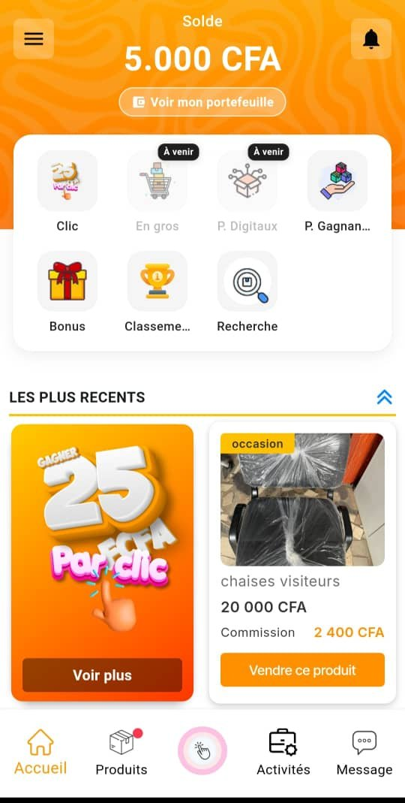
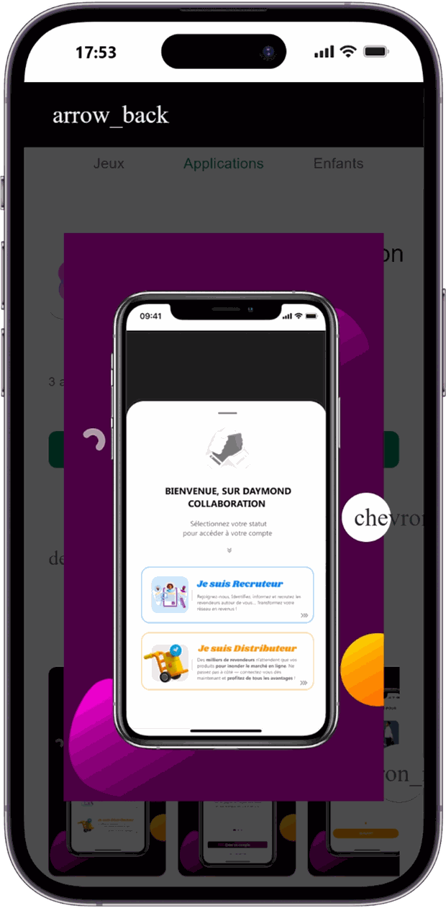
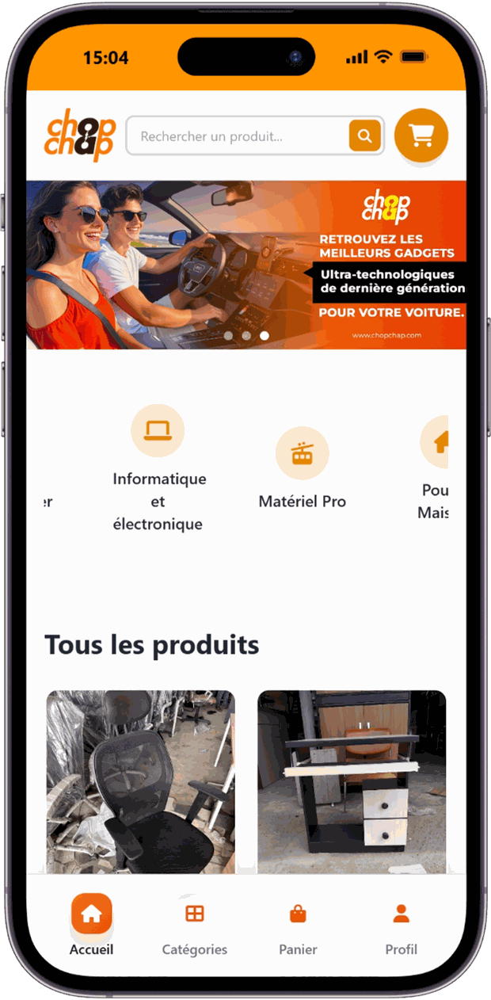
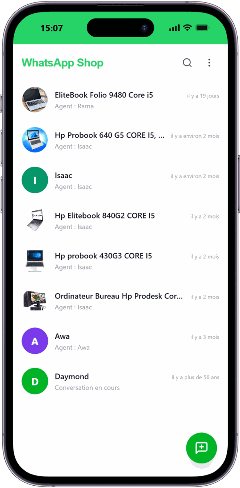
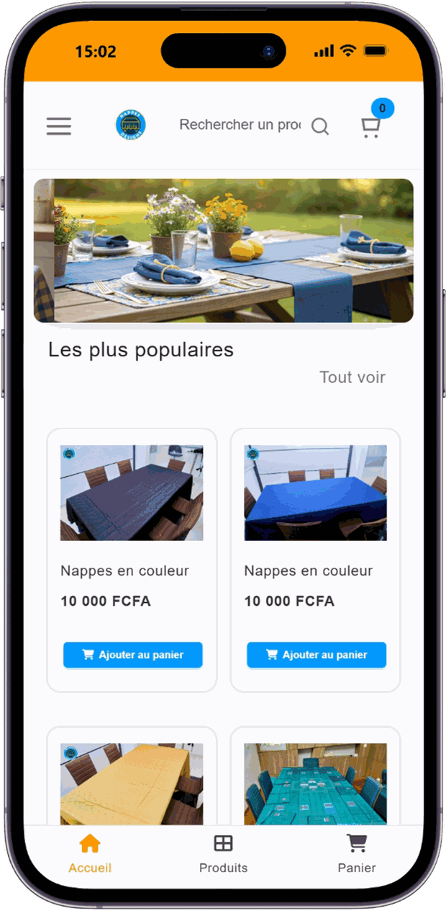
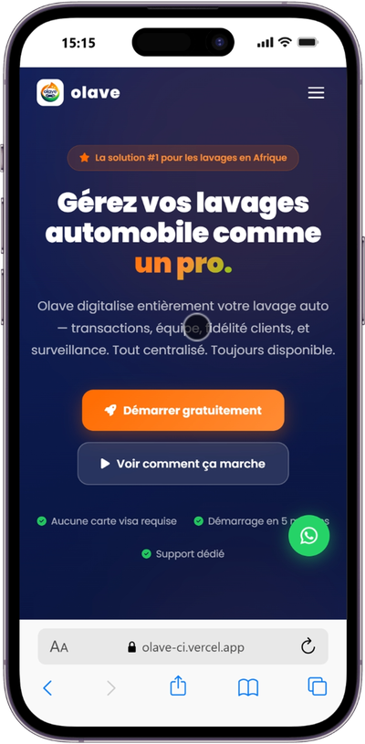
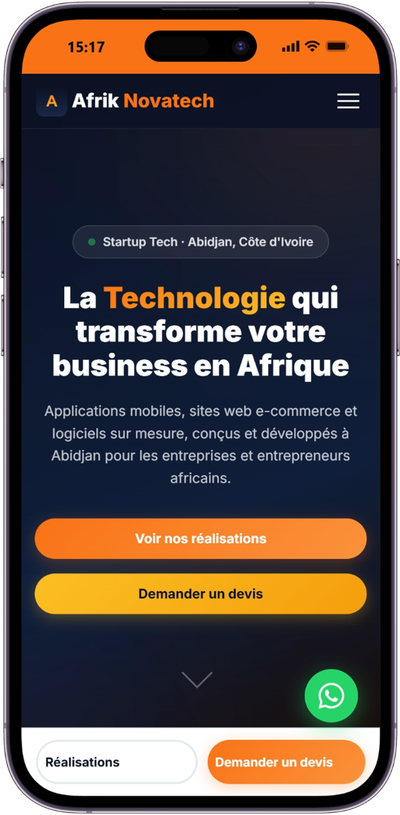

Marc-Aurèle Développeur.
Full-Stack Web & Mobile — Flutter · Laravel · Next.js
3 ans d'expérience, de l'analyse du besoin à la mise en production. J'ai dirigé la technique d'applications mobiles utilisées par plus de 35 000 personnes dans une dizaine de pays d'Afrique.
Du besoin métier
à la mise en production.
Développeur full-stack avec 3 ans d'expérience, je conçois et développe des applications web et mobiles de bout en bout : architecture, API REST, bases de données, sécurité, publication sur l'App Store et le Play Store.
Chez Daymond, j'ai occupé le rôle de Lead Technique : développement des applications, gestion de l'infrastructure de production et coordination de développeurs freelances. Je travaille aujourd'hui avec Afrik Novatech.
Je suis ouvert à un poste en CDI, à des missions freelance et au travail à distance.
Ce avec quoi
je construis.
Expérience
& formation.
- Développement d'Olave App, application mobile de gestion de lavage (Flutter, API Laravel, notifications push).
- Réalisation du site vitrine de l'entreprise.
- Application web de gestion des inscriptions (Next.js, API Laravel, MySQL), déployée en continu sur Vercel et Railway.
- Conception et développement des applications de l'entreprise : Distribution, Fournisseur, Agent Commercial, Agent Commercial IA (WhatsApp Shop), marketplace ChopChap, plateforme Admin.
- Mise en place et maintenance des API backend, administration et optimisation des bases de données.
- Intégration des solutions de paiement Wave et CinetPay.
- Publication et maintenance sur l'App Store et le Play Store, gestion des environnements de production.
- Coordination et suivi des projets confiés à des développeurs freelances.
- Développement de solutions internes : site internet, outils d'automatisation.
- Support IT et formation aux outils numériques pour 10 utilisateurs et partenaires.
- Création du site e-commerce nappesetdesigns.com, livré en 6 semaines.
- Conception de la base de données relationnelle et sécurisation des données sensibles.
- Numérisation de plus de 300 000 documents juridiques dans une base de données sécurisée.
- Mise en place du traitement, de l'indexation et de la recherche par OCR, dans le respect des contraintes de confidentialité.
- Réalisation et maintenance du site de l'entreprise, participation au développement du CRM interne.
- Administration des bases de données MySQL et support IT pour 50 utilisateurs.
Formation
Ce que j'ai
construit.







Ce qu'ils disent
de mon travail.
ensemble.
Un poste en CDI, une mission freelance ou un projet à distance ? Parlons de ce que vous construisez.
PDF · Mis à jour 2026